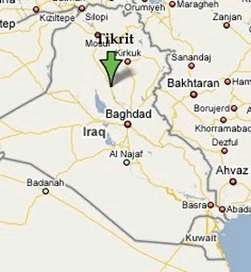
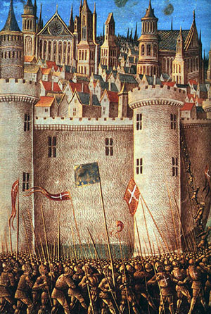
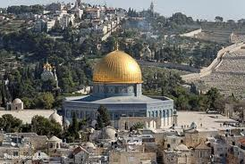
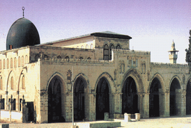

Kali ini kita akan bercerita tentang seorang laki-laki mulia dan memiliki peranan yang besar dalam sejarah Islam, seorang panglima Islam, serta kebanggaan suku Kurdi, ia adalah Shalahuddin Yusuf bin Najmuddin Ayyub bin Syadi atau yang lebih dikenal dengan Shalahuddin al-Ayyubi atau juga Saladin. Ia adalah seorang laki-laki yang mungkin sebanding dengan seribu laki-laki lainnya.
Asal dan Masa Pertumbuhannya

Shalahuddin al-Ayyubi adalah laki-laki dari kalangan ‘ajam (non-Arab), tidak seperti yang disangkakan oleh sebagian orang bahwa Shalahuddin adalah orang Arab, ia berasal dari suku Kurdi. Ia lahir pada tahun 1138 M di Kota Tikrit, Irak, kota yang terletak antara Baghdad dan Mosul. Ia melengkapi orang-orang besar dalam sejarah Islam yang bukan berasal dari bangsa Arab, seperti Imam Bukhari, Imam Muslim, Imam Tirmidzi, dan lain-lain.
Karena suatu alasan, kelahiran Shalahuddin memaksa ayahnya untuk meninggalkan Tikrit sehingga sang ayah merasa kelahiran anaknya ini menyusahkan dan merugikannya. Namun kala itu ada orang yang menasihatinya, “Engkau tidak pernah tahu, bisa jadi anakmu ini akan menjadi seorang raja yang reputasinya sangat cemerlang.”
Dari Tikrit, keluarga Kurdi ini berpindah menuju Mosul. Sang ayah, Najmuddin Ayyub tinggal bersama seorang pemimpin besar lainnya yakni Imaduddin az-Zanki. Imaduddin az-Zanki memuliakan keluarga ini, dan Shalahuddin pun tumbuh di lingkungan yang penuh keberkahan dan kerabat yang terhormat. Di lingkungan barunya dia belajar menunggang kuda, menggunakan senjata, dan tumbuh dalam lingkungan yang sangat mencintai jihad. Di tempat ini juga Shalahuddin kecil mulai mempelajari Alquran, menghafal hadis-hadis Nabi shallallahu ‘alaihi wa sallam, mempelajari bahasa dan sastra Arab, dan ilmu-ilmu lainnya.
Diangkat Menjadi Mentri di Mesir
Sebelum kedatangan Shalahuddin al-Ayyubi, Mesir merupakan wilayah kekuasaan kerajaan Syiah, Daulah Fathimiyah. Kemudian pada masa berikutnya Dinasti Fathimiyah yang berjalan stabil mulai digoncang pergolakan di dalam negerinya. Orang-orang Turki, Sudan, dan Maroko menginginkan adanya revolusi. Saat itu Nuruddin Mahmud, paman Shalahuddin, melihat sebuah peluang untuk menaklukkan kerajaan Syiah ini, ia berpandangan penaklukkan Daulah Fathimiyyah adalah jalan lapang untuk membebaskan Jerusalem dari kekuasaan Pasukan Salib.
Nuruddin benar-benar merealisasikan cita-citanya, ia mengirim pasukan dari Damaskus yang dipimpin oleh Asaduddin Syirkuh untuk membantu keponakannya, Shalahuddin al-Ayyubi, di Mesir. Mengetahui kedatangan pasukan besar ini, sebagian Pasukan Salib yang berada di Mesir pun lari kocar-kacir sehingga yang dihadapi oleh Asaduddin dan Shalahuddin hanyalah orang-orang Fathimyah saja. Daulah Fathimiyah berhasil dihancurkan dan Shalahuddin diangkat menjadi mentri di wilayah Mesir. Namun tidak lama menjabat sebagai menteri di Mesir, dua bulan kemudian Shalahuddin diangkat sebagai wakil dari Khalifah Dinasti Ayyubiyah.
Selama dua bulan memerintah Mesir, Shalahuddin membuat kebijakan-kebijakan progresif yang visioner. Ia membangun dua sekolah besar berdasarkan madzhab Ahlussunnah wal Jamaah. Hal ini ia tujukan untuk memberantas pemikiran Syiah yang bercokol sekian lama di tanah Mesir. Hasilnya bisa kita rasakan hingga saat ini, Mesir menjadi salah satu negeri pilar dakwah Ahlussunnah wal Jamaah atau Sunni. Kebijakan lainnya yang ia lakukan adalah mengganti penyebutan nama-nama khalifah Fathimiyah dengan nama-nama khalifah Abbasiyah dalam khutbah Jumat.
Menaklukkan Jerusalem
Persiapan Shalahuddin untuk menggempur Pasukan Salib di Jerusalem benar-benar matang. Ia menggabungkan persiapan keimanan (non-materi) dan persiapan materi yang luar biasa. Persiapan keimanan ia bangun dengan membersihkan akidah Syiah bathiniyah dari dada-dada kaum muslimin dengan membangun madrasah dan menyemarakkakn dakwah, persatuan dan kesatuan umat ditanamkan dan dibangkitkan kesadaran mereka menghadapi Pasukan Salib. Dengan kampanyenya ini ia berhasil menyatukan penduduk Syam, Irak, Yaman, Hijaz, dan Maroko di bawah satu komando. Dari persiapan non-materi ini terbentuklah sebuah pasukan dengan cita-cita yang sama dan memiliki landasan keimanan yang kokoh.

Dari segi fisik Shalahuddin mengadakan pembangunan makas militer, benteng-benteng perbatasan, menambah jumlah pasukan, memperbaiki kapal-kapal perang, membangun rumah sakit, dll.
Pada tahun 580 H, Shalahuddin menderita penyakit yang cukup berat, namun dari situ tekadnya untuk membebaskan Jerusalem semakin membara. Ia bertekad apabila sembuh dari sakitnya, ia akan menaklukkan Pasukan Salib di Jerusalem, membersihkan tanah para nabi tersebut dari kesyirikan trinitas.
Dengan karunia Allah, Shalahuddin pun sembuh dari sakitnya. Ia mulai mewujudkan janjinya untuk membebaskan Jerusalem. Pembebasan Jerusalem bukanlah hal yang mudah, Shalahuddin dan pasukannya harus menghadapi Pasukan Salib di Hathin terlebih dahulu, perang ini dinamakan Perang Hathin, perang besar sebagai pembuka untuk menaklukkan Jerusalem. Dalam perang tersebut kaum muslimin berkekuatan 63.000 pasukan yang terdiri dari para ulama dan orang-orang shaleh, mereka berhasil membunuh 30000 Pasukan Salib dan menawan 30000 lainnya.
Setelah menguras energy di Hathin, akhirnya kaum muslimin tiba di al-Quds, Jerusalem, dengan jumlah pasukan yang besar tentara-tentara Allah ini mengepung kota suci itu. Perang pun berkecamuk, Pasukan Salib sekuat tenaga mempertahankan diri, beberapa pemimpin muslim pun menemui syahid mereka –insya Allah- dalam peperangan ini. Melihat keadaan ini, kaum muslimin semakin bertambah semangat untuk segera menaklukkan Pasukan Salib.
Untuk memancing emosi kaum muslimin, Pasukan Salib memancangkan salib besar di atas Kubatu Shakhrakh. Shalahuddin dan beberapa pasukannya segera bergerak cepat ke sisi terdekat dengan Kubbatu Shakhrakh untuk menghentikan kelancangan Pasukan Salib. Kemudian kaum muslimin berhasil menjatuhkan dan membakar salib tersebut. Setelah itu, jundullah menghancurkan menara-menara dan benteng-benteng al-Quds.
Pasukan Salib mulai terpojok, merek tercerai-berai, dan mengajak berunding untuk menyerah. Namun Shalahuddin menjawab, “Aku tidak akan menyisakan seorang pun dari kaum Nasrani, sebagaimana mereka dahulu tidak menyisakan seorang pun dari umat Islam (ketika menaklukkan Jerusalem)”. Namun pimpinan Pasukan Salib, Balian bin Bazran, mengancam “Jika kaum muslimin tidak mau menjamin keamanan kami, maka kami akan bunuh semua tahanan dari kalangan umat Islam yang jumlahnya hampir mencapai 4000 orang, kami juga akan membunuh anak-anak dan istri-istri kami, menghancurkan bangunan-bangunan, membakar harta benda, menghancurkan Kubatu Shakhrakh, membakar apapun yang bisa kami bakar, dan setelah itu kami akan hadapi kalian sampai darah penghabisan! Satu orang dari kami akan membunuh satu orang dari kalian! Kebaikan apalagi yang bisa engkau harapkan!” Inilah ancaman yang diberikan Pasukan Salib kepada Shalahuddin dan pasukannya.
Dome of The Rock atau Kubatu Shakhrakh
Shalahuddin pun mendengarkan dan menuruti kehendak Pasukan Salib dengan syarat setiap laki-laki dari mereka membayar 10 dinar, untuk perempuan 5 dinar, dan anak-anak 2 dinar. Pasukan Salib pergi meninggalkan Jerusalem dengan tertunduk dan hina. Kaum muslimin berhasil membebaskan kota suci ini untuk kedua kalinya.
Shalahuddin memasuki Jerusalem pada hari Jumat 27 Rajab 583 H / 2 Oktober 1187, kota tersebut kembali ke pangkuan umat Islam setelah selama 88 tahun dikuasai oleh orang-orang Nasrani. Kemudian ia mengeluarkan salib-salib yang terdapat di Masjid al-Aqsha, membersihkannya dari segala najis dan kotoran, dan mengembalikan kehormatan masjid tersebut.
Masjid al-Aqsha
Wafatnya Sang Pahlawan
Sebagaimana manusia sebelumnya, baik dari kalangan nabi, rasul, ulama, panglima perang dan yang lainnya, Shalahuddin pun wafat meninggalkan dunia yang fana ini. Ia wafat pada usia 55 tahun, pada 16 Shafar 589 H bertepatan dengan 21 Febuari 1193 di Kota Damaskus. Ia meninggal karena mengalami sakit demam selama 12 hari. Orang-orang ramai menyalati jenazahnya, anak-anaknya Ali, Utsman, dan Ghazi turut hadir menghantarkan sang ayah ke peristirahatannya. Semoga Allah meridhai, merahmati, dan membalas jasa-jasa engkau wahai pahlawan Islam, sang pembebas Jerusalem.
Sumber:
Shalahuddin al-Ayyubi Bathalu al-Hathin oleh Abdullah Nashir Unwan Shalahuddin al-Ayyubi oleh Basim al-Usaili Shalahuddin al-Ayyubi oleh Abu al-Hasan an-Nadawi Islamstroy.com